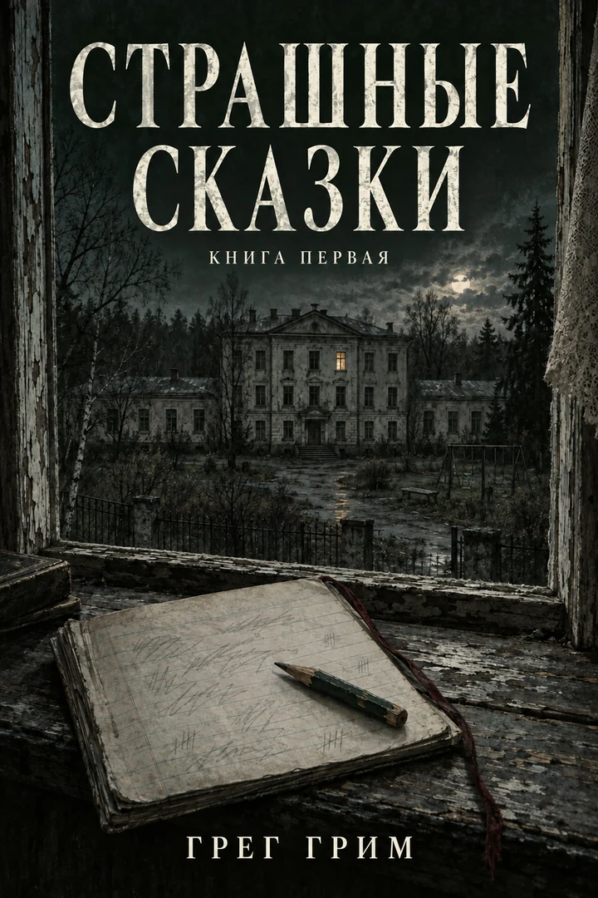
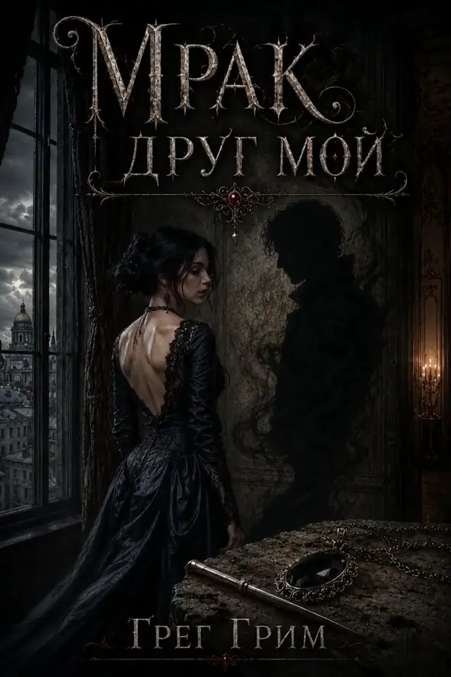
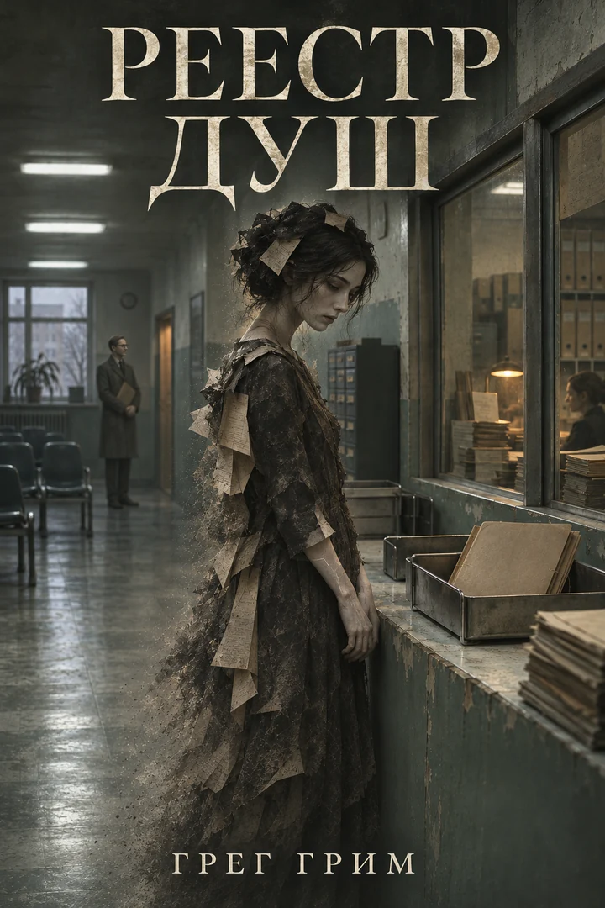

аудио
аудио
Писатель · Тёмная проза
Грег Грим
Тьма выдуманная. И невыдуманная.
Если в доме слишком тихо, это ещё не значит, что он пуст.
Первое знакомство — «Страшные сказки».

Новая редакция · Бесплатно
Страшные сказки
В приюте «Мамино Тепло» пятьдесят детей. Так написано в бумагах. Семён пересчитывает их за обедом и получает сорок девять.
Взрослые говорят, что у исчезнувших детей теперь есть семьи. В тетради Семёна рядом со сказками появляются имена.
За дверью подвала кто-то плачет. Алёна слышит. Засов прибит снаружи, на высоте взрослого плеча.
Новая редакция «Сказок взрослым на ночь». Карточка Литрес с аудиоверсией — ниже на книжной полке.
Книжная полка
У каждой двери — своя цена
Цикл «Несущие» начинается с «Укутанной в ночь». «Мрак, друг мой» — вторая книга, доступная целиком.
аудио

ЦеликомМрак, друг мой
Читать на Литрес →
Реестр душ
Новости в Telegram →
14 Герц
Читать на Литрес → аудио
аудио
Охотник и Легион
Читать на Литрес → аудио
аудио
Сказки взрослым на ночь
Открыть на Литрес → бесплатно
бесплатно
Принцесса и нищий
Читать бесплатно →
Из книги
Найдите текст в темноте
«Страшные сказки» · Глава первая. Крыльцо
Ведро ей выдали не то, из которого пьют, а то, в которое сливают.
Она вымыла крыльцо, потом верхнюю ступеньку, потом нижнюю, потом верхнюю снова, потому что с нижней натекло, а после отжала тряпку, запрокинула голову и стала считать окна.
Сбилась на девятом.
Фрагмент первой главы
Продолжить читать →
Досье
Об авторе
Я пишу тёмную прозу о людях, которые оказываются внутри чужих правил и ищут способ остаться собой.
Дом, тетрадь, засов, штамп. Обычные вещи, пока кто-нибудь не замечает, что они служат чему-то ещё. Мне интересно, какой выбор остаётся у человека, когда привычный порядок начинает работать против него.
Здесь собраны мои книги. А черновики, разговоры о прочитанном и новости остаются в «Закулисье Теней».
«Меня интересует цена выбора. Монстры — лишь те, кто приходит её взыскать.»
Ближе к автору
Закулисье Теней
Черновики, новые книги и то, что осталось за пределами страниц. Здесь можно задать вопрос, оставить отзыв или рассказать, на каком месте пришлось включить свет.